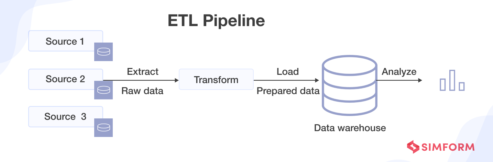
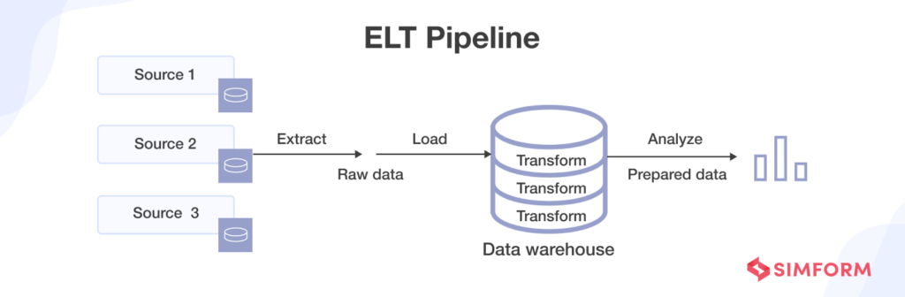

Introduction to Data Orchestration
Presenter: Eddie Cosma
CLEpy Meetup – August 12, 2025
Agenda
- What is Data Orchestration?
- Why Orchestrators Matter
- Apache Airflow Overview
- Dagster Overview
- Feature Comparison
- Demo
- Choosing the Right Tool
- Q&A
The Big Picture: Data Pipelines
- Ingest → [Transform ⇆ Store] → Analyze
- Orchestration coordinates each step and manages dependencies
ETL vs. ELT
 What is Data Orchestration?
- Coordinating execution, dependencies, and state of data tasks
- Scheduling, dependency management, retries, monitoring
Why Use an Orchestrator?
- Reliability
- Reproducibility
- Scalability
- Observability
- Collaboration
What is a DAG?

- DAG = Directed Acyclic Graph
- Represents tasks (nodes) and dependencies (edges) in a workflow
- Directed: edges have a direction, indicating execution order
- Acyclic: no cycles allowed — you can’t loop back to a previous task
- Ensures workflows have a clear start and end
Further reading: https://en.wikipedia.org/wiki/Directed_acyclic_graph
Apache Airflow Overview
- Origin: Airbnb, now Apache project
- DAG-based workflows
- Large community & integrations
Airflow 2 vs Airflow 3
| Feature | Airflow 2 | Airflow 3 |
|---|---|---|
| Executor | Celery/K8s/Local | Async-first, better scaling |
| API | Stable REST API | Expanded API surface |
| Scheduling | Static DAG parse | Dynamic mapping improvements |
| UI | Grid view | Real-time React UI |
Airflow Architecture

Dagster Overview
- Launched 2019
- Asset-centric approach
- Type checking & strong local dev experience
Dagster Architecture

Different Philosophies
| Feature | Airflow | Dagster |
|---|---|---|
| Paradigm | Task/DAG-based | Asset-based |
| UI | Monitoring/admin | Dev + monitoring |
| Testing | Minimal | Built-in |
Demo: Airflow
from airflow import DAG
from airflow.operators.python import PythonOperator
from datetime import datetime
def fetch_data():
print("Fetching data...")
with DAG("etl_airflow", start_date=datetime(2023, 1, 1), schedule_interval="@daily") as dag:
fetch_task = PythonOperator(task_id="fetch", python_callable=fetch_data)
Demo: Dagster
from dagster import asset
@asset
def fetch_data():
print("Fetching data...")
Strengths Recap
| Feature | Airflow | Dagster |
|---|---|---|
| Ecosystem | ✅ | ⚠ |
| Dev Experience | ⚠ | ✅ |
| Asset Awareness | ⚠ | ✅ |
Final Takeaways
- Orchestration = reliability for data pipelines
- Airflow 2 solid; Airflow 3 coming
- Dagster modern and dev-friendly
Q&A
Questions?